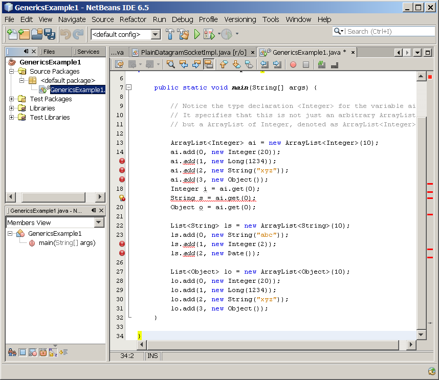

Java Generics
Java 2 Platform, Standard Edition (J2SE
platform) 5.0 introduces
several extensions to the Java programming language. One of these is
the introduction of generics. Generics allow you to abstract over
types. The most common examples are container types, such as those in
the collection hierarchy. Before the release of the J2SE platform 5.0,
when you take an element out of a collection, you must cast it to the
type of element stored in the collection. In addition to being
inconvenient, this is unsafe. The compiler does not check that your
cast is the same as the collection’s type, so the cast can fail at
runtime. Generics provide a way for you to communicate the type of a
collection to the compiler, so that it can be checked during compile
time. Once the compiler knows the element type of the collection, the
compiler can check that you have used the collection consistently and
can insert the correct casts on values being taken out of the
collection. In this Hands-on Lab, you learn how to use generics by
writing lines of code in the source editor of NetBeans 4.0 software,
which immediately informs you of compile errors. Whenever possible,
explanations of why certain compile errors have occurred are provided.
Expected duration: 90 minutes
Software Needed
Before you begin, you need to install the following software on your
computer as described
here.
- 1111_javase5generics.zip (download)
- It contains this document and the lab contents
- Download it and unzip in a directory of your choice
Change Log
- March 7th, 2007: Created
- May 31st, 2007: Homework is added
- Jan. 10th, 2009: NetBeans 6.5 is used
Lab Exercises
Exercise 1: Use Generic classes with type
parameters
In
this exercise, you will learn the basic concept of Generics by adding
lines of code to the
Main.java.
You
will try to reason why some code work while others result in
compilation errors. Technical explanations are then followed.
(1.1)
Compile time type checking through Generics
0. Start NetBeans IDE if you have not done so yet.
1. Create a new NetBeans project
- Select File->New Project (Ctrl+Shift+N). The New Project dialog box appears.
- Under Choose Project
pane,
select Java under Categories and Java Application under Projects.
- Click Next.
- Under Name and Location
pane, for the Project Name
field, type in GenericsExample1
as
project name.
- For Create Main Class
field, type in GenericsExample1.
(Figure-1.10 below)
- Click Finish.
Figure-1.10: Create a new project
- Observe that GenericsExample1 project
appears and IDE generated GenericsExample1.java
is displayed in the source editor window of NetBeans IDE.
2. Modify the IDE generated
GenericExample1.java
as shown in Code-1.11 below and see if you experience any
compile errors. Study the code by paying
special attention to the bold fonted parts.
import
java.util.ArrayList;
import java.util.Date;
import java.util.List;
public class GenericsExample1 {
public static void main(String[] args) {
// Notice the type
declaration <Integer> for the variable ai.
// It specifies that this is
not just an arbitrary ArrayList,
// but a ArrayList of
Integer, denoted as ArrayList<Integer>.
ArrayList<Integer> ai = new ArrayList<Integer>(10);
ai.add(0, new Integer(20));
ai.add(1, new Long(1234));
ai.add(2, new String("xyz"));
ai.add(3, new Object());
Integer i = ai.get(0);
String s = ai.get(0);
Object o = ai.get(0);
List<String> ls = new ArrayList<String>(10);
ls.add(0, new String("abc"));
ls.add(1, new Integer(2));
ls.add(2, new Date());
List<Object> lo = new ArrayList<Object>(10);
lo.add(0, new Integer(20));
lo.add(1, new Long(1234));
lo.add(2, new String("xyz"));
lo.add(3, new Object());
}
}
|
Code-1.11: GenericExample1.java
3. Observe that some lines have compile errors as shown in Figure-1.12
below.

Figure-1.12: Compile errors
4. Understand why some lines have compile errors and while others don't
by reading the following explanations.
Line #14: Adding an entry of Integer
object to an ArrayList of Integer should work fine as expected.
Line #15, #16, #17 (lines that have red x boxes): These three lines of
code result in compilation error - cannot find symbol, symbol: method
add(..). The compilation errors are generated because Long,
String, and Object types are not Integer type nor sub-type of it.
In pre-J2SE 5.0, a ClassCastException would have occurred during
runtime (if you are casting the extracted object to a incompatible
type) not compile time. Here by using generics, you are detecting
a problem during compile time.
Line #18: Note that you do not have to cast Integer type as you would
have done in pre-J2SE 5.0. This is because compiler knows that
ArrayList<Integer> contains only Integer's, it is not necessary
to cast an element retrieved from the ArrayList of Integer to Integer
type.
Line #19 (line that has red x box): Compiler generates compile error
since String is not Integer type.
Line #20: This code works since the Integer type is Object type
(meaning Integer type is a sub-class of Object type).
Line #22: When you create an instance of an ArrayList class, you also
specify a type argument, <String>, to tell the compiler that the
ArrayList is only to be used to hold objects of type String. (String is
a final class so there should not be any sub-type of it.)
Line #23: Adding an entry of String to an ArrayList of String should
work fine.
Line #24, #25 (lines that have red x boxes): These two lines of code
result in compilation error - cannot find symbol, symbol: method
add(..). The compilation errors are generated because Integer and
Date types are not String type nor subtype of it.
Line #27: When you create an instance of an ArrayList class, you also
specify a type argument, <Object>, to tell the compiler that the
ArrayList is only to be used to hold objects of type Object or sub-type
of it.
Line #28, #29, #30, #31: Because Integer, Long, String, and Object
types are all Object type of subtype of it, adding an entry of these
types to an ArrayList of Object should work fine.
5. For your own exercise, do some experimentation by improvising
your own code
and see if
they behave as you expect. A sample code is provided in Code-1.14
below.
//
// Invoke various methods of a collection
//
List<Number> ln2 = new
Vector<Number>(20); // Right click this
line and select Fix Imports (Alt+Shift+F)
ln2.add(0, new Integer(3));
ln2.add(1, new Long(1000L));
String s2 = new String("passion");
ln2.add(s2);
Number n2 = ln2.get(0);
Integer i2 = ln2.get(0);
Boolean b2 = ln2.contains(new
Integer(3));
Boolean b3 = ln2.contains(s2);
System.out.println("b2="+b2);
System.out.println("b3="+b3);
//
// Try to add an ArrayList of
Integer to an ArrayList of Number
//
ArrayList<Integer> ai2 = new
ArrayList<Integer> (10);
ai2.add(new Integer(5));
ln2.addAll(ai2);
//
// Try to add an ArrayList of
String to an ArrayList of Number
//
ArrayList<String> as2 = new
ArrayList<String>(10);
as2.add(new String("adventure"));
ln2.addAll(as2);
for (Number n: ln2){
System.out.println("number "+ n);
}
|
Code-1.14: Sample code
Summary
IIn this exercise, you got a exposure to a generic definition of a
collection
class,
ArrayList<E>. You also learned, <E>, specifies the
formal type parameter of the generic'ized ArrayList
class. You also learned how to invoke the generic version of
ArrayList class by
replacing the formal type parameter, <E>, by concrete type
argument such as <Integer>, <String>, or <Object>.
Exercise 2: Generics and subtyping
In this exercise, you will learn about a
distinct behavior of Generics
that might take you a while to get used to. Basically you will
learn
why Java compiler does not allow the following code, thus generates
compilation error.
| ArrayList<Object> ao = new
ArrayList<Integer>(); |
(2.1)
Experiment with sub-typing
1. Create a new NetBeans project
- Select File->New Project (Ctrl+Shift+N). The New Project dialog box appears.
- Under Choose Project
pane,
select Java under Categories and Java Application under Projects.
- Click Next.
- Under Name and Location
pane, for the Project Name
field, type in GenericsSubtyping as
project name.
- For Create Main Class
field, type in GenericsSubtyping.
- Click Finish.
- Observe that GenericsSubtyping project
appears and IDE generated GenericsSubtyping.java
is displayed in the source editor window of NetBeans IDE.
2. Modify the IDE generated
GenericsSubtyping.java
as shown in Code-2.11 below. Study the code by paying
special attention to the bold fonted parts.
import java.util.ArrayList;
import java.util.List;
import java.util.Vector;
public class GenericsSubtyping {
public static void main(String[] args) {
// These should work
ArrayList<Integer> ai
= new ArrayList<Integer>();
ArrayList<String> as =
new ArrayList<String>();
ArrayList<Object> ao1
= new ArrayList<Object>();
// There is no
inheritance relationship between type arguments
ArrayList<Object> ao2
= new ArrayList<String>();
ArrayList<Object> ao3
= new ArrayList<Integer>();
// There is
still inheritance relationship between classes
List<String> ls = new
ArrayList<String>();
List<Object> lo = new
ArrayList<String>();
// There is
still inheritance relationship between elements in a collection
object
List<Number> ln1 = new
Vector<Number>();
List<Number> ln2 = new
Vector<Integer>();
List<Number> ln3 = new
ArrayList<Long>();
}
}
|
Code-2.11: GenericsSubtyping.java
3. Observe that some lines have compile errors as shown in Figure-2.12
below.
Figure-2.12
4. Understand why some lines have compile errors and while others don't
by reading the following explanations.
Line #9: When you create an instance of
an ArrayList class, you also specify a type argument, <Integer>,
to tell the compiler that the ArrayList is only to be used to hold
objects of type Integer or sub-type of it. We will call this
ArrayList<Integer> as an ArrayList of Integer.
Line #9, #10, #11: As we have learned in Exercise 2, when you create an
instance of an ArrayList<E> class, you also specify a type
argument, for example, ArrayList<Integer> in Line #9,
ArrayList<String> in Line #10, and ArrayList<Object> in
Line #11, to tell the compiler that the ArrayList is only to be used to
hold objects of a particular type or sub-type of it. In other
words, ArrayList<Object> can hold objects of Object type or
sub-type of it.
Line #12, #13: (lines that have red x box): These two lines of code
result in compilation error, for example, incompatible types,
found: java.util.ArrayList<java.lang.String> required:
java.util.ArrayList<java.lang.Object> for Line #12.
<Learning point> As
it clearly indicates, you cannot
assign an instance of
ArrayList<String>
to a variable of
ArrayList<Object>
type. Nor you can assign an instance of
ArrayList<Integer> to a
varaible of
ArrayList<Object>
type.
In
other words, an ArrayList of String is not an ArrayList of Object and
an ArrayList of Integer is not an ArrayList of Object. This is
very counter-intuitive to our understanding of OO concept but
it is a very important aspect to remember in Generics.
Gilad Bracha (JSR-14 specification lead) explained why this assignment
is not allowed in Generics
in
his
Java
Programming Language (Chapter 3: Generics and Subtyping) [2].
Basically if it had been allowed, then there would be a possibility of
ClassCastException being thrown
during runtime, which goes against the "type-safety" principle of
Generics.
Let's take a look an example code.
List<String> ls = new
ArrayList<String>(); //1
List<Object> lo = ls; //2
lo.add(new Object()); // 3
String s = ls.get(0); // 4: attempts to assign an Object to a String!
ClassCastException would have to be thrown! |
Line 1 is certainly legal. But Line 2 is not legal in
Generics. If it has been allowed, then during runtime,
ClassCastException would have
to be thrown in Line 4. [2]
5. For your own exercise, do some experimentation by improvising
your own code
and see if
they behave as you expect. A sample code is provided in Code-1.14
below.
//
// Assignment of collection with
parameter types
//
List<Object> lo5 = new
ArrayList<Integer>();
List<Object> lo6 = new
Vector<Integer>(5);
Collection<Object> co1 = new
Vector<String>();
// Right-click this line and select Fix
Imports first
Collection<Object> co2 = new
ArrayList<Integer> (10);
Collection<Integer> ci1 = new
ArrayList<Integer> (10); |
Code-1.14: Experimentation code
NetBeans
project:
This exercise up to this point is provided as a ready-to-open-and-run
NetBeans project as part of hands-on lab zip file. You can find it as
<LAB_UNZIPPED_DIRECTORY>/javase5generics/samples/GenericsSubtyping.
You can just open it and run it.
return to top of the
exercise
Summary
In
this exercise, you learned that ArrayList<String>
is not an ArrayList<Object> and why that is the case.
return to
the top
Exercise 3:Wild card
In this exercise, you will learn the concept of wildcard and
learn
when to use them. The wildcard type is equivalent to saying the
type is unknown, so Collection<?> is the same as saying a
Collection of unknown type.
(3.1)
Wild card
1. Create a new NetBeans project
- Select File->New Project (Ctrl+Shift+N). The New Project dialog box appears.
- Under Choose Project
pane,
select Java under Categories and Java Application under Projects.
- Click Next.
- Under Name and Location
pane, for the Project Name
field, type in GenericsWildcard as
project name.
- For Create Main Class
field, type in GenericsWildcard.
- Click Finish.
- Observe that GenericsWildcard project
appears and IDE generated GenericsWildcard.java
is displayed in the source editor window of NetBeans IDE.
2. Modify the IDE generated
GenericsWildcard.java
as shown in Code-3.11 below. Study the code by paying
special attention to the bold fonted parts.
import java.util.ArrayList;
import java.util.Collection;
public class GenericsWildcard {
static void printCollection(Collection<Object>
c){
for (Object o: c)
System.out.println(o);
}
public static void main(String[] args) {
// TODO code application
logic here
ArrayList<Integer> a =
new ArrayList<Integer>(10);
printCollection(a);
}
}
|
Code-3.11: GenericsWildcard.java
3. Observe that some lines have compile errors as shown in Figure-3.12
below.
Figure-3.12: Compile error
4. Understand why some lines have compile errors and while others don't
by reading the following explanations.
Line#15 (line that has red x
box): Again, the reason
the compilation error occurs on this line is because you are passing
an instance of
ArrayList<Integer> into where Collection<Object> is
expected. By now, you should be well aware that
ArrayList<Integer> is not sub-type of ArrayList<Object> and
ArrayList<Integer> is not a sub-type of
Collection<Object>. This is the same
compilation error you have experienced in exercise 2. The
compilation error you experienced in Figure-40 above has the same
effect as the code in
Code-41 below.
Collection<Object> c = new
ArrayList<Integer>
(10); //
Compilation error
|
5. One way to fix this is to change the printCollection(..) method as
following. Note that type, Integer, is matching between the
caller and
callee.
import java.util.ArrayList;
import java.util.Collection;
public class GenericsWildcard {
static void printCollection(Collection<Integer> c){
for (Object o: c)
System.out.println(o);
}
public static void main(String[] args) {
ArrayList<Integer> a =
new ArrayList<Integer>(10);
printCollection(a);
}
}
|
Code-3.14: Use compatible type
6. Now supposed you want to pass not only a collection of Integer but
also a collection of any type such as Long, Float, or
String etc. How
would you change the printCollection()? You know you can't use
Collection<Object> as you've seen in previous steps. Here
is
where the unknown type <?> (or it is called wildcard) comes into
the
picture. In order to accommodate a collection of any type, you
can
use unknown type <?> as shown in Code-3.15 below.
import java.util.ArrayList;
import java.util.Collection;
public class GenericsWildcard {
static void printCollection(Collection<?> c){
for (Object o: c)
System.out.println(o);
}
public static void main(String[] args) {
// TODO code application
logic here
ArrayList<Integer> a =
new ArrayList<Integer>(10);
printCollection(a);
ArrayList<Long> l = new ArrayList<Long>(10);
printCollection(l);
ArrayList<String> s = new ArrayList<String>(10);
printCollection(s);
}
}
|
Code-3.15: Use wildcard
The code in Code-3.15 above has the same effect as the one shown in
Code-3.16
below.
Collection<?> c = new ArrayList<Integer>
(10);
// This code works
c = new ArrayList<Long>
(10);
// This code works
c = new ArrayList<String>
(10);
// This code works
|
Code-3.16: Usage of unknown type
NetBeans
project:
This exercise up to this point is provided as a ready-to-open-and-run
NetBeans project as part of hands-on lab zip file. You can find it as
<LAB_UNZIPPED_DIRECTORY>/javase5generics/samples/GenericsWildcard.
You can just open it and run it.
return to top of the
exercise
(3.2)
Bounded wild card
Now we are ready to learn
Bounded
Wildcards. There may well be situations where we want to be able
to define a type argument so that it is restricted to a particular
class or sub-type of that class. Let's say you want to
constrain the
printCollection()
method to receive only the Number type
and its sub-types instead of any type. In other words, you want
compiler to generate a compilation error when the printCollection()
method
receive a Collection of String type while it receives a Collection of
Number, Integer, or Long without compilation errors. This is
where you can use a
Collection of bounded Wildcards,
<?
extends Number>.
1. Create a new NetBeans project
- Select File->New Project (Ctrl+Shift+N). The New Project dialog box appears.
- Under Choose Project
pane,
select Java under Categories and Java Application under Projects.
- Click Next.
- Under Name and Location
pane, for the Project Name
field, type in GenericsBoundedWildcard as
project name.
- For Create Main Class
field, type in GenericsBoundedWildcard.
- Click Finish.
- Observe that GenericsBoundedWildcard
project
appears and IDE generated GenericsBoundedWildcard.java
is displayed in the source editor window of NetBeans IDE.
2. Modify the IDE generated
GenericsBoundedWildcard.java
as shown in Code-3.21 below. Study the code by paying
special attention to the bold fonted parts.
import
java.util.ArrayList;
import java.util.Collection;
public class GenericsBoundedWildcard {
static void printCollection(Collection<? extends Number> c){
// Bounded wildcard
for (Object o: c)
System.out.println(o);
}
public static void main(String[] args) {
ArrayList<Integer> a =
new ArrayList<Integer>(10);
printCollection(a);
ArrayList<Long> l =
new ArrayList<Long>(10);
printCollection(l);
ArrayList<String> s = new
ArrayList<String>(10);
printCollection(s);
// Now compile error should occur
}
}
|
Code-3.21: GenericsBoundedWildcard.java
3. Observe that some lines have compile errors as shown in Figure-3.22
below.
Figure-3.22: Compile error
The code above has the same effect as the one shown in
Code-3.23 below.
Collection<? extends Number> c = new ArrayList<Integer>
(10); // This code works
c = new ArrayList<Long>
(10);
// This code works
c = new ArrayList<String>
(10);
// Compilation error
|
Code-3.23: Usage of bounded wildcard
4. Now is the time you are going to your own experimentation.
Improvise your own code
and see if
they behave as you expect. Code-3.24 below contains sample code
you
can experiment with.
Collection<? extends Number> c3;
c3 = new
Vector<Integer>();
c3.add(new Integer(3));
c3.add(new Long(4L));
c3 = new
Vector<String>();
c3 = new
Vector<Long>();
c3 = new
ArrayList<Date>();
Collection<? extends
Object> c4;
c4 = new
Vector<Integer>();
c4 = new
Vector<String>();
c4 = new
Vector<Long>();
c4 = new
ArrayList<Date>();
Collection<?> c5;
c5 = new
Vector<Integer>();
c5 = new
Vector<String>();
c5 = new
Vector<Long>();
c5 = new
ArrayList<Date>();
|
Code-3.24: Experimental code using wildcard as type argument
NetBeans
project:
This exercise up to this point is provided as a ready-to-open-and-run
NetBeans project as part of hands-on lab zip file. You can find it as
<LAB_UNZIPPED_DIRECTORY>/javase5generics/samples/GenericsBoundedWildcard.
You can just open it and run it.
return to top of the
exercise
Summary
In this exercise, you have learned how to retrieve information on a
ThreadGroup.
return
to the top
Exercise 4: Define your own Generic class
We
are all familiar with defining a class in Java as something like
“public class Foo extends Frame implements ActionListener”. This
still remains the same under Generics, except that an optional set of
type parameters have been added. Again the type
parameters are placed between < and >. A generic
class can have multiple type parameters and, as with type arguments,
they are separated by commas.
So far, you have worked with generic classes that are already provided
by J2SE 5.0 SDK. In this exercise, you are going to create your own
Generic class and then use the class in your code.
(4.1)
Create a generic class, Pair<F, S>
1. Create a new NetBeans project
- Select File->New Project (Ctrl+Shift+N). The New Project dialog box appears.
- Under Choose Project
pane,
select Java under Categories and Java Application under Projects.
- Click Next.
- Under Name and Location
pane, for the Project Name
field, type in MyOwnGenericClass as
project name.
- For Create Main Class
field, type in MyOwnGenericClass.
- Click Finish.
- Observe that MyOwnGenericClass project
appears and IDE generated MyOwnGenericClass.java
is displayed in the source editor window of NetBeans IDE.
2. Modify the IDE generated
MyOwnGenericClass.java
as shown in Code-4.11 below. Note that the code creates an
object instance of
Pair<Number,
String>. You will define
Pair<F, S> in the subsequent step.
public class MyOwnGenericClass {
public static void main(String[] args) {
// Create an instance of
Pair <F, S> class. Let's call it p1.
Number n1 = new Integer(5);
String s1 = new
String("Sun");
Pair<Number,String> p1
= new Pair<Number,String>(n1, s1);
// The following line of
code should
generate compile error
// Pair<Number,String>
p2 = new Pair<Number,String>(new Integer(4), new Integer(3));
System.out.println("first of
p1 (right after creation) = " + p1.getFirst());
System.out.println("second
of p2 (right after creation) = " + p1.getSecond());
// Set internal variables of
p1.
p1.setFirst(new Long(6L));
p1.setSecond(new
String("rises"));
System.out.println("first of
p1(after setting values) = " + p1.getFirst());
System.out.println("second
of p1 (after setting values) = " + p1.getSecond());
}
}
|
Code-4.11: MyOwnGenericClass.java
3. Write
Pair.java as shown in
Code-4.12 below.
public
class Pair<F, S> {
F
first; S second;
public Pair(F
f, S s) {
first = f; second = s;
}
public void setFirst(F f){
first = f;
}
public F getFirst(){
return first;
}
public void setSecond(S s){
second = s;
}
public S getSecond(){
return second;
}
}
|
Code-4.12: Pair.java
4. Build and run the project
- Right click MyOwnGenericClass project
and select Run.
- Observe the result in the Output
window.
(Figure-4.14 below)
first of p1 (right after
creation) = 5
second of p2 (right after creation) = Sun
first of p1(after setting values) = 6
second of p1 (after setting values) = rises
|
Figure-4.14: Result of running MyOwnGenericClass application
return to top of the
exercise
(4.2)
Use wild card
1. Modify the
MyOwnGenericClass.java
as shown in Code-4.21 below. The code fragments that need
to be added are highlighted in bold and blue-colored font.
public class MyOwnGenericClass {
public static void main(String[] args) {
// Create an instance of
Pair <F, S> class. Let's call it p1.
Number n1 = new Integer(5);
String s1 = new
String("Sun");
Pair<Number,String> p1
= new Pair<Number,String>(n1, s1);
System.out.println("first of
p1 (right after creation) = " + p1.getFirst());
System.out.println("second
of p2 (right after creation) = " + p1.getSecond());
// Set internal variables of
p1.
p1.setFirst(new Long(6L));
p1.setSecond(new
String("rises"));
System.out.println("first of
p1(after setting values) = " + p1.getFirst());
System.out.println("second
of p1 (after setting values) = " + p1.getSecond());
// Create an instance of Pair <F, S> class using wildcard type
arguments.
Number n2 = new Integer(15);
String s2 = new String("again");
Pair<?, ?> p2 = new Pair<Number, String>(n2, s2);
System.out.println("first of p2 = " + p2.getFirst());
System.out.println("second of p2 = " + p2.getSecond());
// Create an instance of Pair <F, S> class using wildcard with
bounded type arguments.
Number n3 = new Integer(25);
String s3 = new String("and again!");
Pair<? extends String, ?> p3 = new Pair<String, String>(s3,
s3);
System.out.println("first of p3 = " + p3.getFirst());
System.out.println("second of p3 = " + p3.getSecond());
}
}
|
Code-4.21: MyOwnGenericClass.java
2. Build and run the project
- Right click MyOwnGenericClass project
and select Run.
- Observe the result in the Output
window.
(Figure-4.24 below)
first of p1 (right after
creation) = 5
second of p2 (right after creation) = Sun
first of p1(after setting values) = 6
second of p1 (after setting values) = rises
first of p2 = 15
second of p2 = again
first of p3 = and again!
second of p3 = and again!
|
Figure-4.24: Result of running MyOwnGenericClass1 application
return to top of the
exercise
(4.3)
Create another Generic class, PairExtended<F, S, T>
Now you are going to create a definition of another generic
class, PairExtended<F, S, T>, which extends Pair<F, S> you
created in previous step.
1. Write
PairExtended.java as
shown in Code-4.32 below.
Study the code by paying
special attention to the bold fonted parts.
public
class PairExtended <F, S, T> extends Pair<F, S> {
T third;
/** Creates a new instance of PairExtended */
PairExtended(F f, S s, T t){
super(f, s);
third = t;
}
public T getThird(){
return third;
}
}
|
Code-4.32: PrintStringsThread.java
2. Modify the
MyOwnGenericClass.java
as shown in Code-4.33 below. The code fragments that need to be
added are highlighted in bold and blue-colored font.
public
class MyOwnGenericClass {
public static void main(String[] args) {
// Create an instance of
Pair <F, S> class. Let's call it p1.
Number n1 = new Integer(5);
String s1 = new
String("Sun");
Pair<Number,String> p1
= new Pair<Number,String>(n1, s1);
System.out.println("first of
p1 (right after creation) = " + p1.getFirst());
System.out.println("second
of p2 (right after creation) = " + p1.getSecond());
// Set internal variables of
p1.
p1.setFirst(new Long(6L));
p1.setSecond(new
String("rises"));
System.out.println("first of
p1(after setting values) = " + p1.getFirst());
System.out.println("second
of p1 (after setting values) = " + p1.getSecond());
// Create an instance of
Pair <F, S> class using wildcard type arguments.
Number n2 = new Integer(15);
String s2 = new
String("again");
Pair<?, ?> p2 = new
Pair<Number, String>(n2, s2);
System.out.println("first of
p2 = " + p2.getFirst());
System.out.println("second
of p2 = " + p2.getSecond());
// Create an instance of
Pair <F, S> class using wildcard with bounded type arguments.
Number n3 = new Integer(25);
String s3 = new String("and
again!");
Pair<? extends String,
?> p3 = new Pair<String, String>(s3, s3);
System.out.println("first of
p3 = " + p3.getFirst());
System.out.println("second
of p3 = " + p3.getSecond());
// Create an instance of PairExtended<F, S, T> class with
concrete type arguments,
// <Number, String, Integer>
Number n4 = new Long(3000L);
String s4 = new String("james");
Integer i4 = new Integer(7);
PairExtended<Number, String, Integer> pe4
= new PairExtended<Number, String, Integer>(n4, s4, i4);
System.out.println("first of PairExtended = " + pe4.getFirst());
System.out.println("second of PairExtended = " + pe4.getSecond());
System.out.println("third of PairExtended = " + pe4.getThird());
}
}
|
Code-4.33: TwoStrings.java
3. Build and run the project
- Right click MyOwnGenericClass project
and select Run.
- Observe the result in the Output
window.
(Figure-4.34 below)
first of p1 (right after
creation) = 5
second of p2 (right after creation) = Sun
first of p1(after setting values) = 6
second of p1 (after setting values) = rises
first of p2 = 15
second of p2 = again
first of p3 = and again!
second of p3 = and again!
first of PairExtended = 3000
second of PairExtended = james
third of PairExtended = 7
|
Figure-4.34: Result of running MyOwnGenericClass application
return to top of the
exercise
(4.4)
Use another generic type as a parameter
Add new code fragment to
Main.java
as shown in Code-54 below. The code fragment
that needs to be added is highlighted with bold font. This code
fragment contains lines of code in which invocation of
PairExtended<F,S,T> generic class with concrete type
arguments. This time, the third type argument is set to an
instance of another collection class, ArrayList<Integer>.
1. Modify
MyOwnGenericClass.java
as shown in Code-4.41 below. The code fragments that need to be
added are highlighted in bold and blue-colored font.
import
java.util.ArrayList;
public class MyOwnGenericClass {
public static void main(String[] args) {
// Create an instance of
Pair <F, S> class. Let's call it p1.
Number n1 = new Integer(5);
String s1 = new
String("Sun");
Pair<Number,String> p1
= new Pair<Number,String>(n1, s1);
System.out.println("first of
p1 (right after creation) = " + p1.getFirst());
System.out.println("second
of p2 (right after creation) = " + p1.getSecond());
// Set internal variables of
p1.
p1.setFirst(new Long(6L));
p1.setSecond(new
String("rises"));
System.out.println("first of
p1(after setting values) = " + p1.getFirst());
System.out.println("second
of p1 (after setting values) = " + p1.getSecond());
// Create an instance of
Pair <F, S> class using wildcard type arguments.
Number n2 = new Integer(15);
String s2 = new
String("again");
Pair<?, ?> p2 = new
Pair<Number, String>(n2, s2);
System.out.println("first of
p2 = " + p2.getFirst());
System.out.println("second
of p2 = " + p2.getSecond());
// Create an instance of
Pair <F, S> class using wildcard with bounded type arguments.
Number n3 = new Integer(25);
String s3 = new String("and
again!");
Pair<? extends String,
?> p3 = new Pair<String, String>(s3, s3);
System.out.println("first of
p3 = " + p3.getFirst());
System.out.println("second
of p3 = " + p3.getSecond());
// Create an instance of
PairExtended<F, S, T> class with concrete type arguments,
// <Number, String,
Integer>
Number n4 = new Long(3000L);
String s4 = new
String("james");
Integer i4 = new Integer(7);
PairExtended<Number,
String, Integer> pe4
= new PairExtended<Number, String, Integer>(n4, s4, i4);
System.out.println("first of
PairExtended = " + pe4.getFirst());
System.out.println("second
of PairExtended = " + pe4.getSecond());
System.out.println("third of
PairExtended = " + pe4.getThird());
// Create an instance of PairExtended<F. S, T> class with
// with ArrayList<E> as a third type argument.
ArrayList<Integer> ar4 = new
ArrayList<Integer>(); //
Right-click this line and select Fix Imports first
ar4.add(6000);
ar4.add(7000);
PairExtended<Number, String, ArrayList<Integer>> pe5
= new PairExtended<Number, String, ArrayList<Integer>>(n4,
s4, ar4);
System.out.println("first of PairExtended with ArrayList = " +
pe5.getFirst());
System.out.println("second of PairExtended with ArrayList = " +
pe5.getSecond());
System.out.println("third of PairExtended with ArrayList = " +
pe5.getThird());
}
}
|
Code-4.41: MyOwnGenericClass.java
2. Build and run the project
- Right click MyOwnGenericClass project
and select Run.
- Observe the result in the Output
window.
(Figure-4.34 below)
first of p1 (right after
creation) = 5
second of p2 (right after creation) = Sun
first of p1(after setting values) = 6
second of p1 (after setting values) = rises
first of p2 = 15
second of p2 = again
first of p3 = and again!
second of p3 = and again!
first of PairExtended = 3000
second of PairExtended = james
third of PairExtended = 7
first of PairExtended with ArrayList = 3000
second of PairExtended with ArrayList = james
third of PairExtended with ArrayList = [6000, 7000]
|
Code-4.42: Result
NetBeans
project:
This exercise up to this point is provided as a ready-to-open-and-run
NetBeans project as part of hands-on lab zip file. You can find it as
<LAB_UNZIPPED_DIRECTORY>/javase5generics/samples/MyOwnGenericClass.
You can just open it and run it.
Summary
In this exercise, you learned how to
create your own generic class and how to use it.
return
to the top
Exercise 5: Type erasure
Generics are implemented by the Java
compiler as a front-end conversion called
type erasure. You can (almost) think
of
it as a source-to-source translation, whereby the generic version of
your code is converted to the non-generic version. Basically,
type erasure gets rid of (or erases) all generic type information. All
the
type information between angle brackets is thrown out, so, for
example, a parameterized type like
List<String>
is converted into a raw type
List
and similarly
List<Date>
is converted into
List. All
remaining uses of type variables are replaced by the upper bound of the
type variable (usually Object). And, whenever the resulting code isn't
type-correct, a cast to the appropriate type is inserted.
The two important things about type erasure are
- Assuming all code is compiled under 5.0 and uses parameterized
types you can guarantee that you won't get a ClassCastException at
runtime
- There is full backwards compatibility with existing compiled code
that was generated with pre-J2SE 5.0 compilers
(5.1)
Type erasure example 1
1. Create a new NetBeans project
- Select File->New Project (Ctrl+Shift+N). The New Project dialog box appears.
- Under Choose Project
pane,
select Java under Categories and Java Application under Projects. Click Next.
- Under Name and Location
pane, for the Project Name
field, type in TypeErasure as
project name.
- For Create Main Class
field, type in TypeErasure.
- Click Finish.
- Observe that TypeErasure project
appears and IDE generated TypeErasure.java
is displayed in the source editor window of NetBeans IDE.
2. Modify the IDE generated
TypeErasure.java
as shown in Code-5.11 below.
import java.util.ArrayList;
import java.util.Collection;
import java.util.List;
public class TypeErasure {
static void printCollection(Collection<? extends
Number> c){
for (Object o: c)
System.out.println(o);
}
public static void main(String[] args) {
// Display class information
of the various ArrayList instances
ArrayList<Integer> ai
= new ArrayList<Integer>();
System.out.println("Class of
ArrayList<Integer> = " + ai.getClass());
List<Integer> li = new
ArrayList<Integer>();
System.out.println("Class of
List<Integer> = " + li.getClass());
ArrayList<String> as =
new ArrayList<String>();
System.out.println("Class of
ArrayList<String> = " + as.getClass());
ArrayList ar = new
ArrayList();
System.out.println("Class of
ArrayList = " + ar.getClass());
// Check if two ArrayList
instances with different type parameters
// (one with Integer and the
other with String) share the same class (bytecode).
//
Boolean b1 = (ai.getClass()
== as.getClass());
System.out.println("Do
ArrayList<Integer> and ArrayList<String> share same class?
" + b1);
// Check if two ArrayList
instances with different type parameters
// (one with Integer and the
other with raw type) share the same class (bytecode).
//
Boolean b2 = (ai.getClass()
== ar.getClass());
System.out.println("Do
ArrayList<Integer> and ArrayList (raw type) share same class? " +
b2);
}
}
|
Code-5.11: TypeErasure.java
3. Build and run the project
- Right click TypeErasure project
and select Run.
- Observe the result in the Output
window.
(Figure-5.15 below)
Class of
ArrayList<Integer> = class java.util.ArrayList
Class of List<Integer> = class java.util.ArrayList
Class of ArrayList<String> = class java.util.ArrayList
Class of ArrayList = class java.util.ArrayList
Do ArrayList<Integer> and ArrayList<String> share same
class? true
Do ArrayList<Integer> and ArrayList (raw type) share same class?
true
|
Figure-5.15: Result of running TypeErasure
application
NetBeans
project:
This exercise up to this point is provided as a ready-to-open-and-run
NetBeans project as part of hands-on lab zip file. You can find it as
<LAB_UNZIPPED_DIRECTORY>/javase5generics/samples/TypeErasure.
You can just open it and run it.
return to top of the
exercise
(5.2)
Type erasure example 2
1. Create a new NetBeans project
- Select File->New Project (Ctrl+Shift+N). The New Project dialog box appears.
- Under Choose Project
pane,
select Java under Categories and Java Application under Projects. Click Next.
- Under Name and Location
pane, for the Project Name
field, type in TypeErasure2 as
project name.
- For Create Main Class
field, type in TypeErasure2.
- Click Finish.
- Observe that TypeErasure2 project
appears and IDE generated TypeErasure2.java
is displayed in the source editor window of NetBeans IDE.
2. Modify the IDE generated TypeErasure2.java
as shown in Code-5.21 below.
import java.util.List;
import java.util.Vector;
public class TypeErasure2 {
public static void main(String[] args) {
//
// Get class and type
information of a collection class
//
List<Number> ln5 = new
Vector<Number>(20);
Class c3 =
ln5.getClass();
// Right-click this line and select Fix Imports first
System.out.println("Class of
List<Number> =" + c3);
Class [] c4 =
c3.getInterfaces();
// Right-click this line and select Fix Imports first
for (Class c: c4){
System.out.println("Interface = " + c);
}
Class c5 =
c3.getSuperclass();
System.out.println("Superclass = " + c5);
}
}
|
Code-5.21: TypeErasure2.java
3. Build and run the project
- Right click TypeErasure2 project
and select Run.
- Observe the result in the Output
window.
(Figure-5.25 below)
Class of
List<Number> =class java.util.Vector
Interface = interface java.util.List
Interface = interface java.util.RandomAccess
Interface = interface java.lang.Cloneable
Interface = interface java.io.Serializable
Superclass = class java.util.AbstractList
|
Figure-5.25: Result of running TypeErasure2 application
NetBeans
project:
This exercise up to this point is provided as a ready-to-open-and-run
NetBeans project as part of hands-on lab zip file. You can find it as <LAB_UNZIPPED_DIRECTORY>/javase5generics/samples/TypeErasure2.
You can just open it and run it.
Summary
In this exercise, you learned the
concept of type erasure.
return
to the top
Exercise 6: Interoperating with
non-generic code
In this exercise, you will learn how
generic and non-generic codes are used together. You will also learn
about unchecked exception.
(6.1)
Schedule one-time task
1. Create a new NetBeans project
- Select File->New Project (Ctrl+Shift+N). The New Project dialog box appears.
- Under Choose Project
pane,
select Java under Categories and Java Application under Projects. Click Next.
- Under Name and Location
pane, for the Project Name
field, type in GenericsInteroperability as
project name.
- For Create Main Class
field, type in GenericsInteroperability.
- Click Finish.
- Observe that GenericsInteroperability
project
appears and IDE generated GenericsInteroperability.java
is displayed in the source editor window of NetBeans IDE.
2. Modify the IDE generated
GenericsInteroperability.java
as shown in Code-6.11 below. Study the code by paying
special attention to the bold fonted parts.
import java.util.LinkedList;
import java.util.List;
public class GenericsInteroperability {
public static void main(String[] args) {
List<String> ls = new
LinkedList<String>();
List lraw = ls;
lraw.add(new Integer(4));
String s =
ls.iterator().next();
}
}
|
Code-6.11: GenericsInteroperability.java
3. Compile the file.
- Right click GenericsInteroperability.java
and select Compile file. (Or
Right click GenericsInteroperability project
and select Build Project.)
- Observe the waring message below. Note that the compiler
warns unchecked or unsafe operation.
Compiling 1 source file to
C:\javase5generics\samples\GenericsInteroperability\build\classes
Note:
C:\javase5generics\samples\GenericsInteroperability\src\GenericsInteroperability.java
uses unchecked or unsafe operations.
Note: Recompile with
-Xlint:unchecked for details.
|
Figure-6.12: Warning message
4. Run the project
- Right click GenericsInteroperability
project
and select Run.
- Observe the runtime ClassCastException.
(Figure-6.13 below) This is highly
undesirable. (This is not type-safe.) Because of this reason, it
is highly recommended that you do not invoke non-Generic code whenever
possible.
Figure-6.13: Result of running UnGenericsInteroperability application
NetBeans
project:
This exercise up to this point is provided as a ready-to-open-and-run
NetBeans project as part of hands-on lab zip file. You can find it as
<LAB_UNZIPPED_DIRECTORY>/javase5generics/samples/GenericsInteroperabilityWarning.
You can just open it and run it.
4. Modify the
GenericsInteroperability.java
as shown in Code-6.14 below. The code fragment that needs
to be removed (or commented out) is highlighted in bold and red-colored
font while the code fragment that needs to be added is highlighted in
bold and blue-colored font.
import java.util.LinkedList;
import java.util.List;
public class GenericsInteroperability {
public static void main(String[] args) {
List<String> ls = new
LinkedList<String>();
//List lraw = ls;
//lraw.add(new Integer(4));
List<String> ls2 = ls;
ls2.add(new
Integer(4)); // Compile error
String s =
ls.iterator().next();
}
}
|
Code-6.14: GenericsInteroperability.java
5. You should experience the compile error, which means you were able
to
detect type mismatch problem during the compile time rather than during
runtime. (Figure-6.15 below)

Figure-6.15: Compile time type mismatch detection
NetBeans
project:
This exercise up to this point is provided as a ready-to-open-and-run
NetBeans project as part of hands-on lab zip file. You can find it
as
<LAB_UNZIPPED_DIRECTORY>/javase5generics/samples/GenericsInteroperabilityCompileError.
return to top of the
exercise
Summary
In this exercise, you learned how generic and non-generic code are used
together. You alo learned when unchecked exception would occur.
return
to the top
Homework
exercise (for people who
are taking Sang Shin's "Java Programming online course")
1. The homework is to modify
MyOwnGenericClass
NetBeans project you've done in
Exercise 5 above
as following.
(You might want to create a new project by copying
the
MyOwnGenericClass
project. You can name the homework project in any way you want
but here I am going to call it
MyMyOwnGenericClass.)
- Create PairExtendedAgain(F, S,
T, F1) generic class by extending PairExtended(F, S, T)
- Modify Main.java class
to invoke PairExtendedAgain(F, S, T,
F1)
class with concrete type arguments <Integer,
Long, Object,
Boolean>
- Build and run the project
- Zip file of the the
MyMyOwnGenericClass
NetBeans project. (Someone else
should be able to open and run it as a NetBeans project.) You can
use your favorite zip utility or you can use "jar" utility that comes
with JDK as following.
- cd <parent directory that
contains MyMyOwnGenericClass
directory>
(assuming you named your project as MyMyOwnGenericClass)
- jar cvf
MyMyOwnGenericClass.zip MyMyOwnGenericClass
(MyMyOwnGenericClass should
contain nbproject directory)
- Captured output screen -
name it as JavaIntro-javase5generics.gif
or JavaIntro-javase5generics.jpg (or
JavaIntro-javase5generics.<whatver
graphics format>)
- Any screen capture that shows that your program is working is
good enough. No cosmetic polishment is required.
- If you decide to use
different IDE other than NetBeans, the zip
file should contain all the files that are needed for rebuilding the
project.